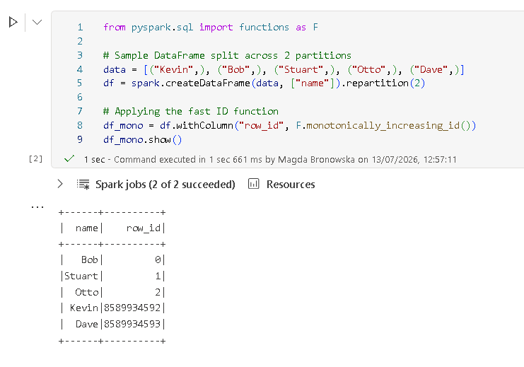
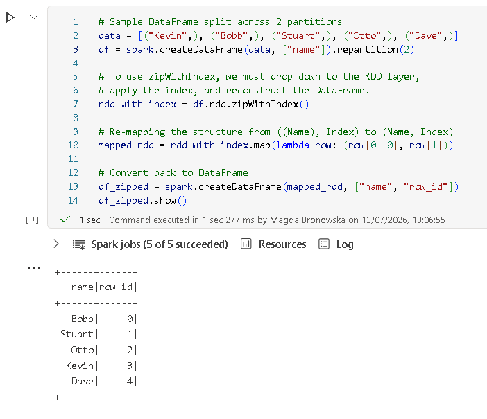

When working with large-scale data in Apache Spark (including PySpark in Microsoft Fabric), generating a unique identifier or a row index for your dataset seems like a trivial task. However, because Spark handles data across a distributed cluster of computers, creating IDs comes with a hidden catch.
Two of the most common ways to achieve this are monotonically_increasing_id() and df.rdd.zipWithIndex(). While they sound like they do similar jobs, they work entirely differently under the hood. Selecting the wrong one can completely block your production pipeline or inject unexpected bugs into your data.
The Core Analogy
To understand how these two methods differ, imagine you are managing a massive marathon with thousands of runners split across different starting corrals (representing Spark's partitions). Your job is to assign a unique bib number (ID) to every single runner.
THE MARATHON ANALOGY
Corral A (5 runners) Corral B (3 runners)
[🏃🏃🏃🏃🏃] [🏃🏃🏃]
── Method 1: monotonically_increasing_id() ───────────────────
Hand out huge pre-allocated blocks of numbers to each corral leader. No coordination.
IDs: 0, 1, 2, 3, 4 IDs: 8589934592, 8589934593, 8589934594
(Fastest, but leaves massive gaps!)
── Method 2: zipWithIndex() ───────────────────
Count Group A first (5 runners). Tell Group B to start its numbering at exactly 5.
IDs: 0, 1, 2, 3, 4 IDs: 5, 6, 7
(Perfectly consecutive, but requires talking/counting first!)
1. monotonically_increasing_id()
How it works?
This is a native Spark SQL function. It follows the "Fast and Rough" approach. Spark assigns a massive, unique block of numbers to each partition ahead of time based on the partition's index number. Specifically, it shifts the partition ID into the upper bits of a 64-bit integer, and counts rows locally within that partition using the lower bits.
Because each partition works with its own isolated pool of numbers, the worker computers do not need to communicate with one another. Notice how the IDs leap to 8589934592 when moving to the next partition block.
Code Example
from pyspark.sql import functions as F # Sample DataFrame split across 2 partitions data = [("Kevin",), ("Bob",), ("Stuart",), ("Otto",), ("Dave",)] df = spark.createDataFrame(data, ["name"]).repartition(2) # Applying the fast ID function df_mono = df.withColumn("row_id", F.monotonically_increasing_id()) df_mono.show()

Example of the numbering pattern produced by monotonically_increasing_id()
2. df.rdd.zipWithIndex()
How it works?
This method uses the "Perfectly Consecutive" approach (series). To eliminate gaps, Spark cannot guess where the next partition should start numbering. It must launch an initial Spark job to scan the data and count exactly how many rows exist in each partition.
Once Partition 0 reports it has exactly 3 rows, Partition 1 is told to start its local numbering at index 3. This guarantees a continuous, unbroken sequence.
Code Example
# Sample DataFrame split across 2 partitions data = [("Kevin",), ("Bob",), ("Stuart",), ("Otto",), ("Dave",)] df = spark.createDataFrame(data, ["name"]).repartition(2) # To use zipWithIndex, we must drop down to the RDD layer, # apply the index, and reconstruct the DataFrame. rdd_with_index = df.rdd.zipWithIndex() # Re-mapping the structure from ((Name), Index) to (Name, Index) mapped_rdd = rdd_with_index.map(lambda row: (row[0][0], row[1])) # Convert back to DataFrame df_zipped = spark.createDataFrame(mapped_rdd, ["name", "row_id"]) df_zipped.show()

Example of the numbering pattern produced by zipWithIndex()
Comparison
| Feature | monotonically_increasing_id() |
df.rdd.zipWithIndex() |
|---|---|---|
| Are IDs Unique? | Yes | Yes |
| Are IDs Consecutive? | No (contains huge gaps) | Yes (0, 1, 2, 3...) |
| Performance Over Large Data | Extremely Fast (no data exchange) | Slow (triggers extra counting jobs) |
| API Layer | Native DataFrames | RDD (requires serialization back and forth) |
| Determinism | Non-deterministic (IDs change if partitions change) | Deterministic (as long as data ordering is stable) |
Where to Use Which
Use monotonically_increasing_id() when:
- You are building primary keys for a data warehouse or a database table join where gaps do not matter.
- You are operating on massive, multi-terabyte datasets where execution speed and system performance are critical.
Use df.rdd.zipWithIndex() when:
- You explicitly need consecutive numbers—such as implementing pagination for a web app frontend, or sampling specific fractions of data based on row count boundaries.
- Your dataset is small-to-medium in size, making the extra counting job overhead negligible.
Common Mistakes to Avoid
- Assuming
monotonically_increasing_id()is Static (The Non-Deterministic Trap)
Because it relies entirely on partition IDs, this function is non-deterministic. If you call the function, filter or repartition the data downstream, and reference that same ID column later, Spark may re-evaluate the execution plan. Rows can shift partitions, resulting in completely different IDs being generated for the same records.
The Fix: If you need the assigned IDs to remain absolute for downstream operations, save or cache your DataFrame directly to storage (.write.mode("parquet")) immediately after applying the ID function. - Dropping Down to RDDs Too Carelessly
zipWithIndexrequires converting your clean Spark DataFrame down to an RDD format, applying the indexes via Python/Java object serialization, and converting it back. This serialization round-trip bypasses Spark’s native catalyst optimizer, resulting in a severe performance hit on wide tables. - Using
Window.row_number()as an Alternative on Huge Datasets
Developers who realize they need consecutive numbers often chooseF.row_number().over(Window.orderBy("some_column"))instead ofzipWithIndex. If you do not specify a partition boundary inside that window statement, Spark forces your entire multi-node dataset into a single computer partition to sort it sequentially. This completely destroys parallelism and will likely cause your driver to crash with an Out-Of-Memory (OOM) error.